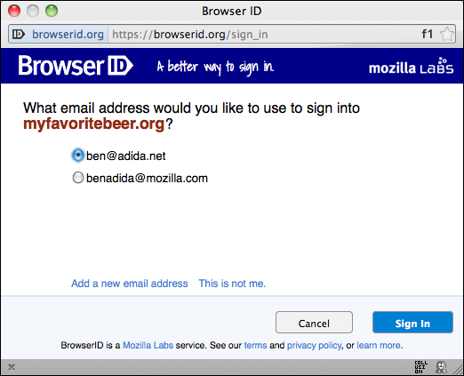
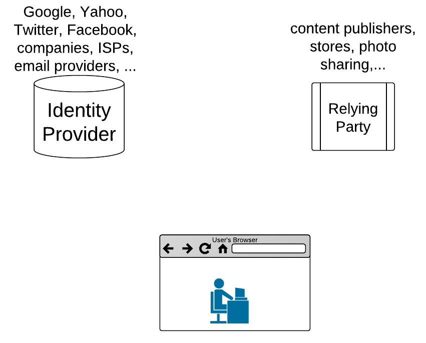
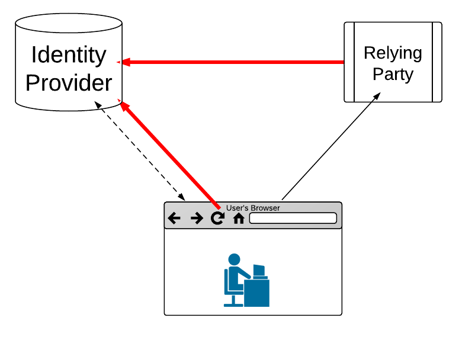
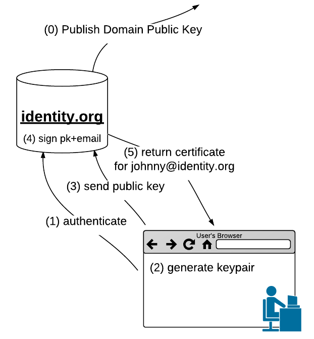
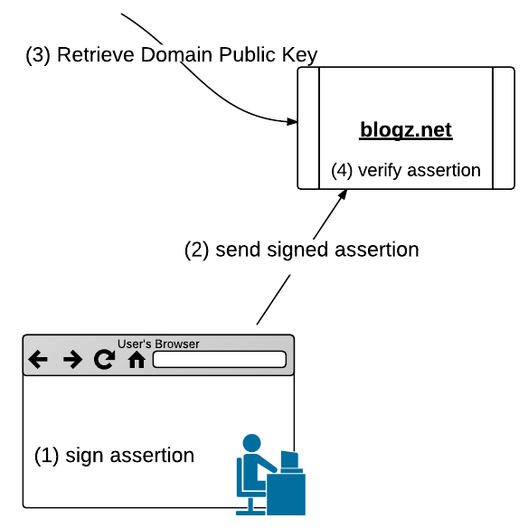
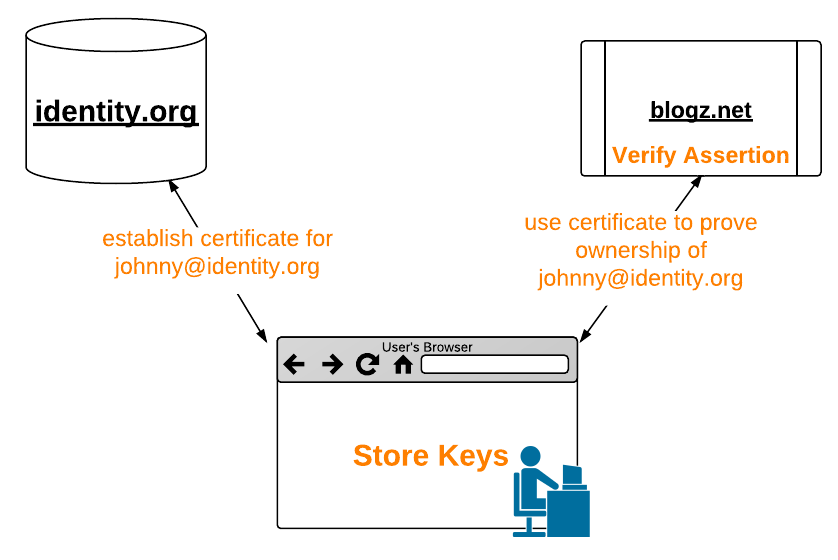
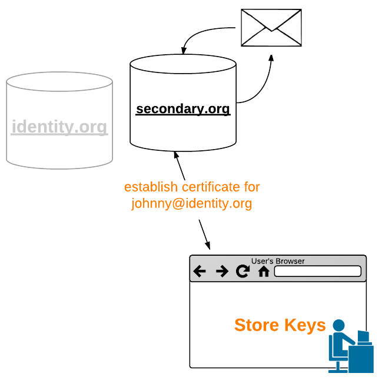
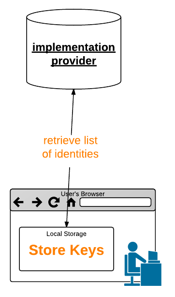
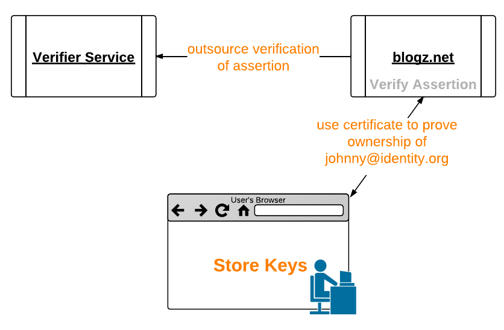
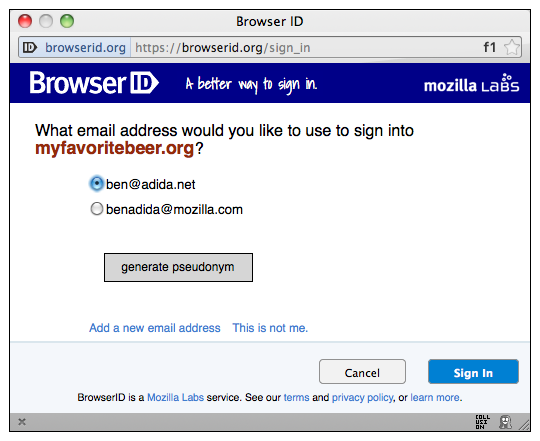

<!DOCTYPE html>

<meta charset="utf-8">
<title>BrowserID Privacy - 2011-08-17</title>

<!-- Your Slides -->
<!-- One section is one slide -->

<section>
    <!-- This is the first slide -->
    <br />
    <div align="center"></div>
    <h1>A Privacy Perspective</h1>
    <br />
    <h5 align="center">Michael Hanson<br />
      Dan Mills<br />
      Lloyd Hilaiel<br />
      Shane Tomlinson<br />
      <u>Ben Adida</u>
    </h5>
    <footer>17 August 2011</footer>
</section>

<section>
<h2>better web login<br />with strong privacy protection</h2>
<div align="center">
<br />

</div>
</section>

<section>
    <h2>vision</h2>
    <br />
    <ul>
      <li> simple for users and developers</li>
      <li> strong support for multiple personas</li>
      <li> decentralized, no lock-in</li>
      <li> privacy-protecting</li>
    </ul>
</section>

<section>
  <h2>players</h2>

  <div align="center">
  
  </div>
</section>

<section>
  <h2>role of the browser</h2>

  <div align="center">
  
  </div>
  <details>
    without browser, identity provider involved in login transaction.<br />
    like a driver's license where, every time you check into a hotel, they call the state to verify.
  </details>
</section>

<section>
  <h2>email addresses</h2>

  <h3 style="font-family: courier;" align="center">johnny@identity.org</h3>
  <br />
  <ul>
    <li> distributed &mdash; domains certify their users</li>
    <li> intuitive &mdash; emails are natural personas</li>
    <li> pseudonyms and self-hosting</li>
    <li> addressable &mdash; proven need for sites</li>
    <li> no lock-in &mdash; recover by emailing the user</li>
  </ul>
</section>

<section>
<br /><br /><br />
<h2>Quick Demo</h2>
</section>

<section>
  <h2>flow &mdash; certify</h2>
<br/>
  <div align="center">
  
  </div>

</section>

<section>
  <h2>flow &mdash; login</h2>
<br />
  <div align="center">
  
  </div>

</section>

<section>
  <h2>key duration</h2>

  <br />
  <ul>
    <li> device loss/compromise: revocation?</li>
    <li> binding a user to a key: non-repudiation?</li>
    <li> limit chance of information leak</li>
    <li> just enough to transfer authority to user</li>
    <li> just enough to keep IdP out of login dance</li>
  </ul>
</section>


<section>
  <h2>architecture goal</h2>

  <div align="center">
    <br />
    
  </div>
</section>

<section>
  <h2>secondary authorities</h2>

  <div align="center">
    <br />
    
  </div>
</section>

<section>
  <h2>javascript implementation</h2>

  <div align="center">
    <br />
    
  </div>

</section>

<section>
  <h2>verifier service</h2>

  <div align="center">
    <br />
    
  </div>
</section>

<section>
  <br /><br /><br /><br />
  <h2>so... what's the point?</h2>
</section>

<section>
  <h2>the RPs
    stay the same</h2>

  <br />
  <blockquote style="font-family: Courier; font-size: 0.9em; margin-left:20px; border: 2px solid #888; background: lightyellow; padding: 15px; margin-right: 20px;">
    navigator.id.getVerifiedEmail(...);
  </blockquote>

  <br />
  <h2>the IdPs
    stay the same</h2>

  <br />
  <blockquote style="font-family: Courier; font-size: 0.9em; margin-left:20px; border: 2px solid #888; background: lightyellow; padding: 15px; margin-right: 20px;">
    navigator.id.registerVerifiedEmail(...);
  </blockquote>
  <details>
    scaffolding<br />
    HDTV rollout: first get the TVs out with the capability, then upgrade programming.
  </details>
</section>

<section>
  <h2>summary</h2>
  <br />
  <ul>
    <li> the browser plays a crucial role</li>
    <li> email addresses are ideal identifiers</li>
    <li> signatures keep login dance private</li>
    <li> short-term keys reduce potential information leaks</li>
    <li> scaffolding for distributed architecture</li>
  </ul>
</section>

<section>
</section>

<section>
  <h2>Email Pseudonyms</h2>

  <br />
  <div align="center">
  
  </div>
</section>


<!-- Your Style -->
<!-- Define the style of you presentation -->

<!-- Maybe a font from http://www.google.com/webfonts ? -->
<link href='http://fonts.googleapis.com/css?family=Oswald' rel='stylesheet'>
<link href='http://fonts.googleapis.com/css?family=Questrial' rel='stylesheet' type='text/css'>
<link href='http://fonts.googleapis.com/css?family=Open+Sans:400,600,700,800' rel='stylesheet' type='text/css'>

<style>
  html { background-color: black; }
  body {background-color: white;}
  /* A section is a slide. It's size is 800x600, and this will never change */
  section {
      /* The font from Google */
      font-family: 'Open Sans', arial, serif;
      font-size: 2em;
  }
  h1, h2, h3 {
      margin-top: 30px;
      text-align: center;
  }
  h4 {
  margin-left: 50px;
  }
  ul {
      margin-left: 120px;
  }
  li {
      padding-bottom: 10px;
  }
  a { color: #FF0066; } a:hover {text-decoration: underline;}
  footer { position: absolute; bottom: 50px; right: 50px; }

  /* Transition effect */
  /* Feel free to change the transition effect for original
     animations. See here:
     https://developer.mozilla.org/en/CSS/CSS_transitions
     How to use CSS3 Transitions: */
  section {
      -moz-transition: left 400ms linear 0s;
      -webkit-transition: left 400ms linear 0s;
      -ms-transition: left 400ms linear 0s;
      transition: left 400ms linear 0s;
  }

  /* Before */
  section { left: -150%; }
  /* Now */
  section[aria-selected] { left: 0; }
  /* After */
  section[aria-selected] ~ section { left: +150% }
</style>


<!-- {{{{ *****************  DZSlides CORE 2.0b1 *************************** -->
<!-- *********************************************************************** -->
<!-- *********************************************************************** -->
<!-- *********************************************************************** -->
<!-- *********************************************************************** -->

<!-- This block of code is not supposed to be edited, but if you want to change the behavior of the slides, feel free to hack it ;) -->

<!-- Default Style -->
<style>
  * { margin: 0; padding: 0; }
  details {display: none;}
  body {
    width: 800px; height: 600px;
    margin-left: -400px; margin-top: -300px;
    position: absolute; top: 50%; left: 50%;
    overflow: hidden;
  }
  html {
    overflow: hidden;
  }
  section {
    position: absolute;
    pointer-events: none;
    width: 100%; height: 100%;
  }
  section[aria-selected] { pointer-events: auto;}
  body {display: none}
  body.loaded {display: block}
</style>

<script>
  var friendWindows = [];
  var idx = 1;
  var slides;

  /* main() */

  window.onload = function() {
    slides = document.querySelectorAll("body > section");
    onhashchange();
    setSlide();
    document.body.className = "loaded";
    setupTouchEvents();
    onresize();
  }

  /* Handle keys */

  window.onkeydown = function(e) {
    // Don't intercept keyboard shortcuts
    if (e.altKey || e.ctrlKey || e.metaKey || e.shiftKey) {
      return;
    }
    if ( e.keyCode == 37 // left arrow
      || e.keyCode == 38 // up arrow
      || e.keyCode == 33 // page up
    ) {
      e.preventDefault();
      back();
    }
    if ( e.keyCode == 39 // right arrow
      || e.keyCode == 40 // down arrow
      || e.keyCode == 34 // page down
    ) {
      e.preventDefault();
      forward();
    }

    if ( e.keyCode == 32) { // space
        e.preventDefault();
        toggleContent();
    }
  }

  /* Touch Events */

  function setupTouchEvents() {
    var orgX, newX;
    var tracking = false;

    var body = document.body;
    body.addEventListener("touchstart", start, false);
    body.addEventListener("touchmove", move, false);

    function start(e) {
      e.preventDefault();
      tracking = true;
      orgX = e.changedTouches[0].pageX;
    }

    function move(e) {
      if (!tracking) return;
      newX = e.changedTouches[0].pageX;
      if (orgX - newX > 100) {
        tracking = false;
        forward();
      } else {
        if (orgX - newX < -100) {
          tracking = false;
          back();
        }
      }
    }
  }

  /* Adapt the size of the slides to the window */

  window.onresize = function() {
    var sx = document.body.clientWidth / window.innerWidth;
    var sy = document.body.clientHeight / window.innerHeight;
    var transform = "scale(" + (1/Math.max(sx, sy)) + ")";
    document.body.style.MozTransform = transform;
    document.body.style.WebkitTransform = transform;
    document.body.style.OTransform = transform;
    document.body.style.msTransform = transform;
    document.body.style.transform = transform;
  }
  function getDetails(idx) {
    var s = document.querySelector("section:nth-of-type("+ idx +")");
    var d = s.querySelector("details");
    return d?d.innerHTML:"";
  }
  window.onmessage = function(e) {
    msg = e.data;
    win = e.source;
    if (msg === "register") {
      friendWindows.push(win);
      win.postMessage(JSON.stringify({method: "registered", title: document.title, count: slides.length}), "*");
      win.postMessage(JSON.stringify({method: "newslide", details: getDetails(idx), idx: idx}), "*");
      return;
    }
    if (msg === "back") back();
    if (msg === "forward") forward();
    if (msg === "toggleContent") toggleContent();
    // setSlide(42)
    var r = /setSlide\((\d+)\)/.exec(msg);
    if (r) {
        idx = r[1];
        setSlide();
    }
  }

  /* If a Video is present in this new slide, play it.
     If a Video is present in the previous slide, stop it. */

  function toggleContent() {
    var s = document.querySelector("section[aria-selected]");
    if (s) {
        var video = s.querySelector("video");
        if (video) {
            if (video.ended || video.paused) {
                video.play();
            } else {
                video.pause();
            }
        }
    }
  }

  /* If the user change the slide number in the URL bar, jump
     to this slide. */

  window.onhashchange = function(e) {
    var newidx = ~~window.location.hash.split("#")[1];
    if (!newidx) newidx = 1;
    if (newidx == idx) return;
    idx = newidx;
    setSlide();
  }

  /* Slide controls */

  function back() {
    if (idx == 1) return;
    idx--;
    setSlide();
  }
  function forward() {
    if (idx >= slides.length) return;
    idx++;
    setSlide();
  }
  function setSlide() {
    var old = document.querySelector("section[aria-selected]");
    var next = document.querySelector("section:nth-of-type("+ idx +")");
    if (old) {
      old.removeAttribute("aria-selected");
      var video = old.querySelector("video");
      if (video) { video.pause(); }
    }
    if (next) {
      next.setAttribute("aria-selected", "true");
      var video = next.querySelector("video");
      if (video) { video.play(); }
    } else {
      console.warn("No such slide: " + idx);
      idx = 0;
      for (var i = 0; i < slides.length; i++) {
          if (slides[i].hasAttribute("aria-selected")) {
              idx = i + 1;
          }
      }
    }
    window.location.hash = idx;
    for (var i = 0; i < friendWindows.length; i++) {
        friendWindows[i].postMessage(JSON.stringify({method: "newslide", details: getDetails(idx), idx: idx}), "*");
    }
  }
</script>
<!-- vim: set fdm=marker: }}} -->
